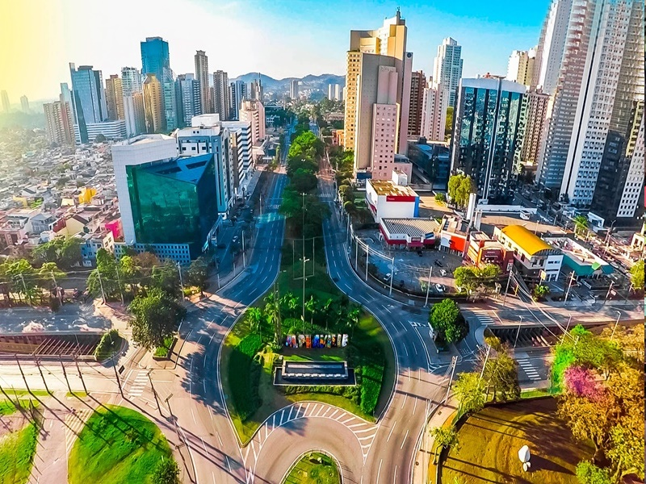

Barueri, localizada na região metropolitana de São Paulo, é um grande polo econômico e tecnológico, com cerca de 280 mil habitantes. A cidade ficou famosa por abrigar Alphaville, bairro planejado que reúne empresas, condomínios e centros comerciais modernos.
Entre os principais pontos turísticos estão o Parque Municipal Dom José, o Museu Municipal de Barueri e o Parque Ecológico. Para passeios gratuitos, os parques da cidade são os favoritos, oferecendo áreas de lazer e contato com a natureza.
A economia de Barueri é forte no setor de serviços e tecnologia, sendo sede de grandes empresas nacionais e multinacionais. Na gastronomia, Alphaville concentra restaurantes variados, desde culinária japonesa até churrascarias tradicionais. Como curiosidade, Barueri já foi considerada uma das cidades mais ricas do Brasil em arrecadação de impostos.
